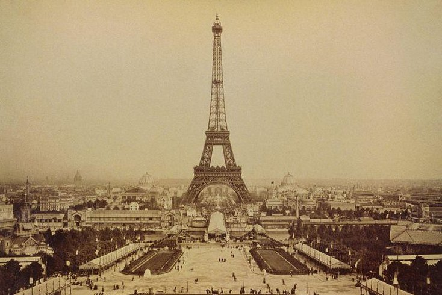

Why Was the Eiffel Tower Built?
The Eiffel Tower was intended to be a showcase of French engineering and a temporary exhibit for the 1889 Exposition Universelle. However, it gained popularity and was later used for scientific experiments, radio transmissions, and tourism.During World War II, the Eiffel Tower was closed to the public. French resistance fighters cut its elevator cables to prevent Nazi soldiers from using it. Hitler himself never climbed it, as he would have had to take the stairs!
Eiffel Tower’s Construction
The tower was built in just over two years, two months, and five days using 18,038 iron parts and 2.5 million rivets. More than 300 workers braved dangerous heights to assemble the structure, and despite the challenges, it was completed ahead of schedule.
Eiffel Tower’s Dimensions and Features
- Height: 330 meters (1,083 feet)
- Weight: 10,100 tons
- Three visitor levels
- 1,665 steps to the summit
- Painted in three shades of brown to create a seamless gradient